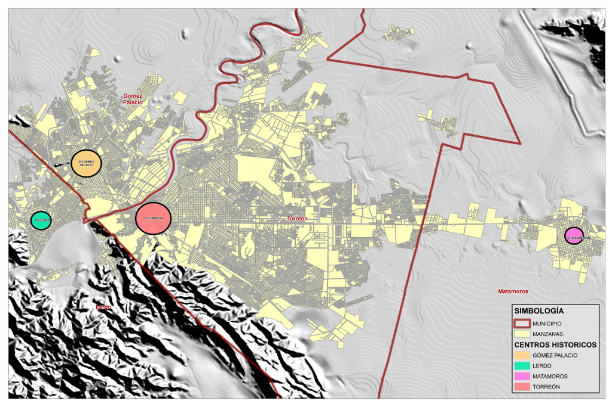

Los centros históricos pueden considerarse como los sitios de mayor simbolismo, significativos, apreciados y distintivos de cualquier ciudad, son los espacios que la dotan de un carácter especial y que la hacen diferente de las demás. Son lugares donde existen monumentos históricos, edificaciones simbólicas y conjuntos arquitectónicos de interés.
Estos elementos provocan que la ciudad sea un lugar del cual puedan sentirse orgullosos sus propios habitantes, el centro histórico representa la memoria colectiva de la ciudad, en sus calles se aprecian los vestigios del urbanismo de diferentes épocas y obras arquitectónicas que muestran la historia viva del pasado.
Por esta razón tiene un valor educativo y de interés general en los propios habitantes, viajeros y turistas. Un hecho muy importante es que los centros históricos encierran valores de convivencia para la mayoría de los ciudadanos, las calles y plazas que se ubican en ellos son lugares de paseo y de encuentro, son espacio de diversidad y mezcla funcional que provocan las relaciones sociales. Estas características hacen de los centros históricos los espacios sociales físicos de más valor y complejidad de la ciudad.
EN LOS MUNICIPIOS LAGUNEROS
En la Zona Metropolitana de la Laguna es necesario reforzar la identidad y la importancia de los centros históricos, detonar y sacar el mayor provecho de ellos, en lo urbano, turístico, económico y funcional. Torreón es la primer ciudad de la ZML que por decreto se declaró como “Conjunto Histórico de Torreón” (noviembre de 1996) en el que se incluyen 241 manzanas.
En Gómez Palacio fue en la primera sesión ordinaria de Cabildo de este año que aprobaron la declaratoria de Centro Histórico de la ciudad, así como el reglamento respectivo, donde se autorizó a la Secretaria del Ayuntamiento enviar al Congreso del Estado el proyecto de decreto para darle vigencia a dicha declaratoria, donde se establecerá el marco legal para el resguardo del conjunto de los bienes culturales y naturales, así como la preservación, conservación o rescate del patrimonio histórico y arquitectónico del municipio. El reglamento aprobado consta de 13 capítulos en 113 artículos que abarcan el centro histórico, así como monumentos y fincas rurales.
Con esta declaratoria se tiene la oportunidad de poder evitar que inmuebles de particulares con valor histórico o arquitectónico sean demolidos sin ningún control oficial.
En las ciudades de Lerdo, Durango; y Matamoros, Coahuila; se han realizado acciones de remozamiento en fachadas, banquetas, pavimentos y mejoras de infraestructura en sus centros históricos, pero actualmente no se cuenta con reglamento o delimitación para protección y conservación, lo importante es que se pudiera contar con un “Plan Parcial de Desarrollo Urbano”.
Los planes parciales representan el instrumento rector para el ordenamiento del territorio, pues integran el conjunto de normas específicas a efecto de precisar la zonificación y regular los usos, destinos y reservas en los predios localizados en su área de aplicación.
No todos los centros históricos de las diversas ciudades son iguales, a pesar de que la gran mayoría de estos suelen presentar características comunes, se puede realizar una clasificación atendiendo a su funcionalidad y tipología, a grandes rasgos, los centros históricos se dividen en tres grandes grupos según su funcionalidad:
a) Centros históricos que han dejado de ser el centro urbano a nivel económico o funcional, pero que conservan la centralidad histórica y cultural.
b) Centros históricos que continúan siendo el centro funcional de la ciudad actual.
c) Centros históricos donde lo histórico y lo funcional mantienen cierta complementariedad, conservando además los elementos de centralidad.
Un mal común que sufren estas zonas urbanas son los procesos de degradación, que hacen que estos lugares ya no sean un lugar atractivo para vivir, llevando poco a poco a que el centro empiece a estar habitado mayoritariamente por grupos no productivos de rentas bajas y escaso poder económico.
No obstante el centro histórico constituye una pieza fundamental en el paisaje urbano de la ciudad. Aunque representa una parte pequeña en el actual tejido urbano el casco antiguo es el espacio histórico por excelencia y en gran medida la memoria colectiva de la ciudad, es el resultado histórico - social que contribuye a los rasgos singulares de un determinado paisaje urbano y a que la ciudad tenga sus propias señas de identidad.
SITUACIÓN DE LOS CH
Torreón es la primer ciudad de la ZML que por decreto se declaró como “Conjunto Histórico de Torreón” en el que se incluyen 241 manzanas.
Tiene 83 edificios catalogados como históricos por el INAH.
Gómez Palacio cuenta con la declaratoria de Centro Histórico de la ciudad.
El reglamento aprobado consta de 13 capítulos en 113 artículos.
Matamoros cuenta con 50 manzanas como propuesta de regeneración para su Centro Histórico.
Tiene 37 edificios considerados históricos, según su Plan Director de Desarrollo Urbano.
Centros Históricos de la Zona Metropolitana

Centro Histórico Torreón